功能： 用于查询个人的销售记录，即订单情况。
用途1：查询制单人从中国仓发散货的所有订单情况。
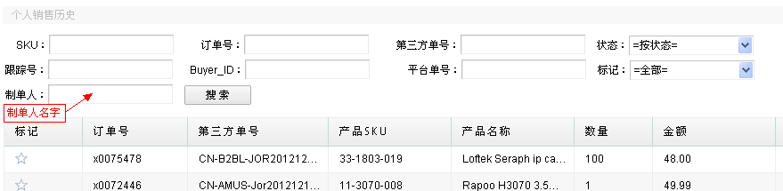
说明：直接输入制单人的英文名字，点击搜索，便可查出该制单人下所有从中国蛇口仓发货的所有订单详情。
用途2：查询制单人对于某一产品从中国仓发货的销售记录。
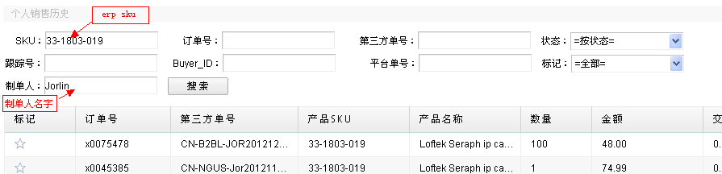
说明：输入制单人英文名，输入想要查询的产品在erp的sku号，点击搜索，便可查出该制单人对某一个产品的左右从中国蛇口仓发货的销售记录。
用途3：查询某一从中国发货的订单具体详情。
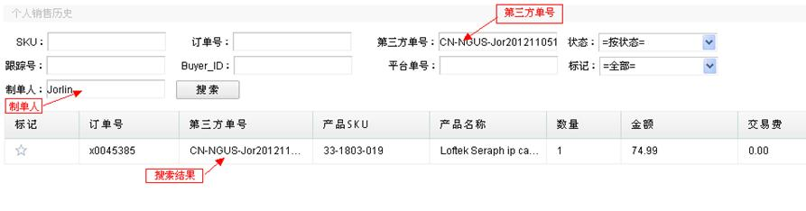
说明：输入想要搜索的已知的第三方单号，进行搜索，erp会自动匹配出制单人姓名，同时会显示出该订单的具体情况。
用途4：查询制单人下订单状态。
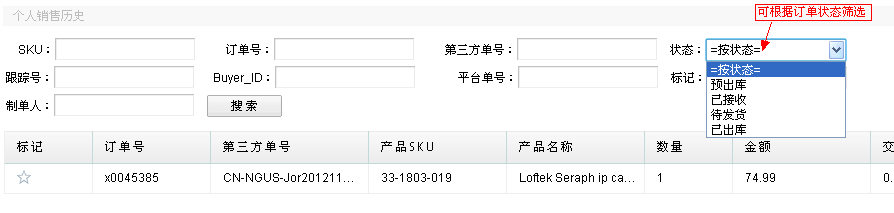
说明：可根据订单状态筛选，查询制单人下所有预出库/已接收/待发货/已出库的订单详情。例如：查询Jorlin已出库的订单详情，如下：
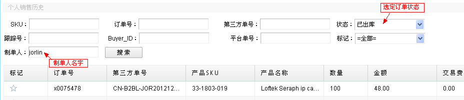
说明：选择订单状态，填写制单人名字，进行搜索，搜索结果如下：
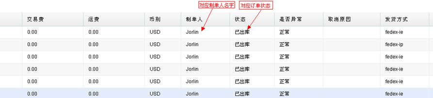
用途5：根据跟踪号来查询订单。
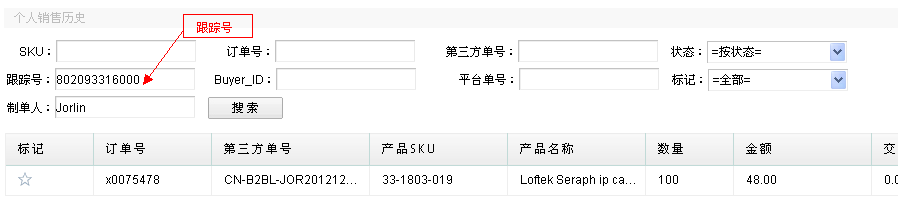
说明：输入已知的物流跟踪号，进行搜索，erp会自动匹配出该跟踪号对应的制单人名字以及订单详情，如下：
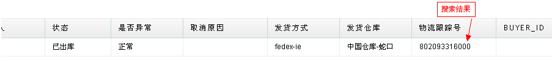
用途6：查询平台单号对应下的订单详情。
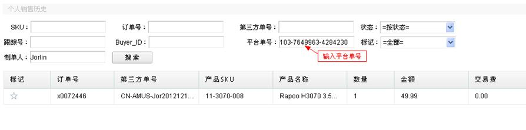
说明：输入已知的平台单号，进行搜索。Erp会自动匹配出该单号对应的制单人及此订单的详情。
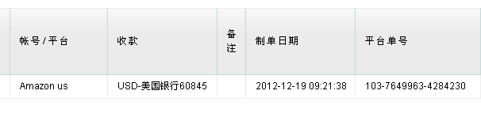
用途7： 标记订单&根据标记查询。
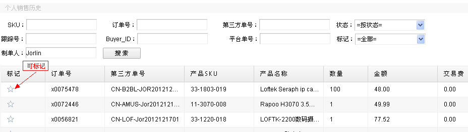
可对重要或是需要特别注意的订单做标记，点击空白五星即可标记并编辑，如下：
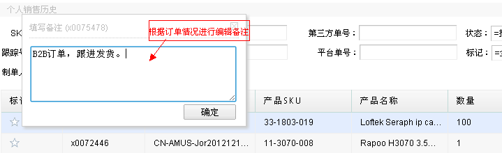
根据订单情况进行编辑，然后点击确认。如下：
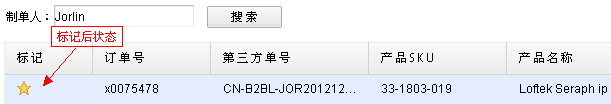
确认完成后订单标记状态为黄色五星。之后便可根据标记来进行查询。
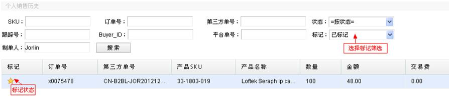
选择已标记，输入制单人名字，点击搜索。便可查询出该制单人名下已标注的订单详情；将鼠标移向黄色五星，之前编辑的备注会显示出来。在此也可取消标记。
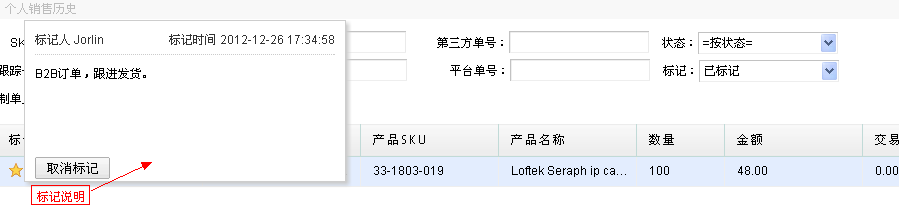